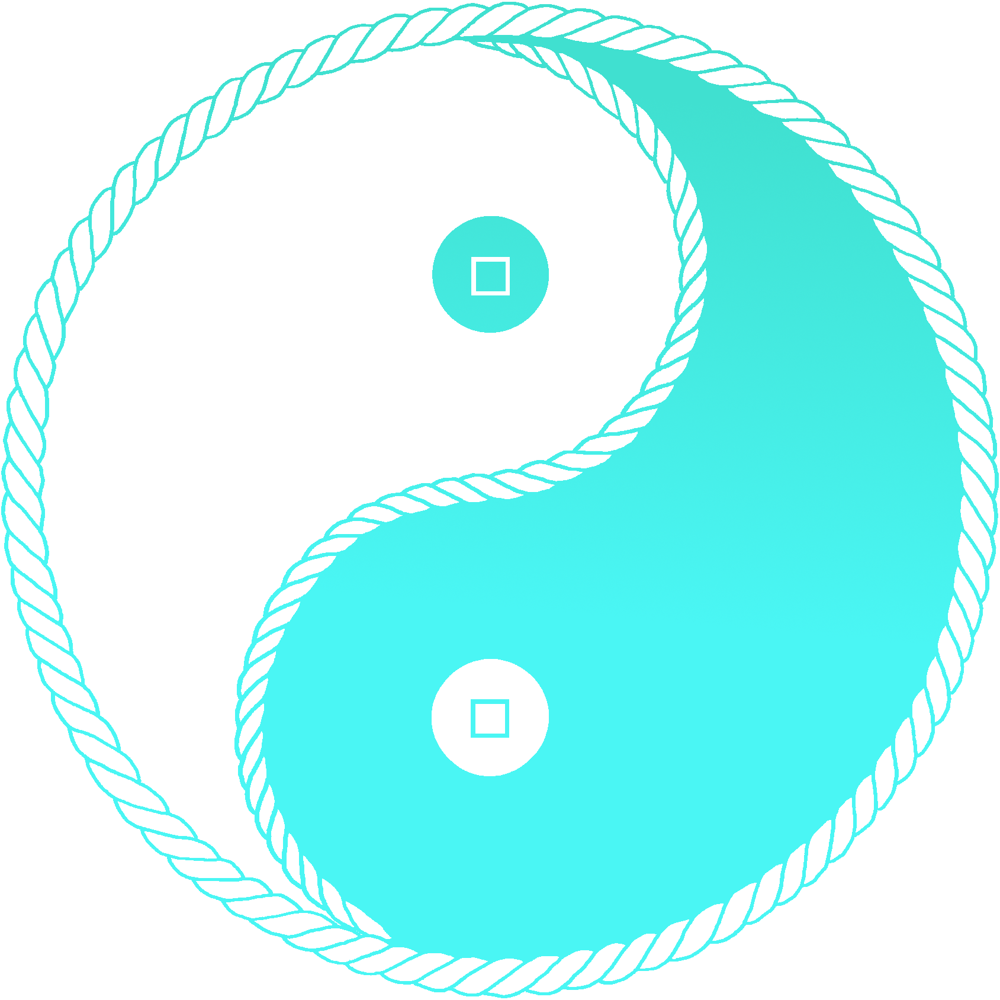
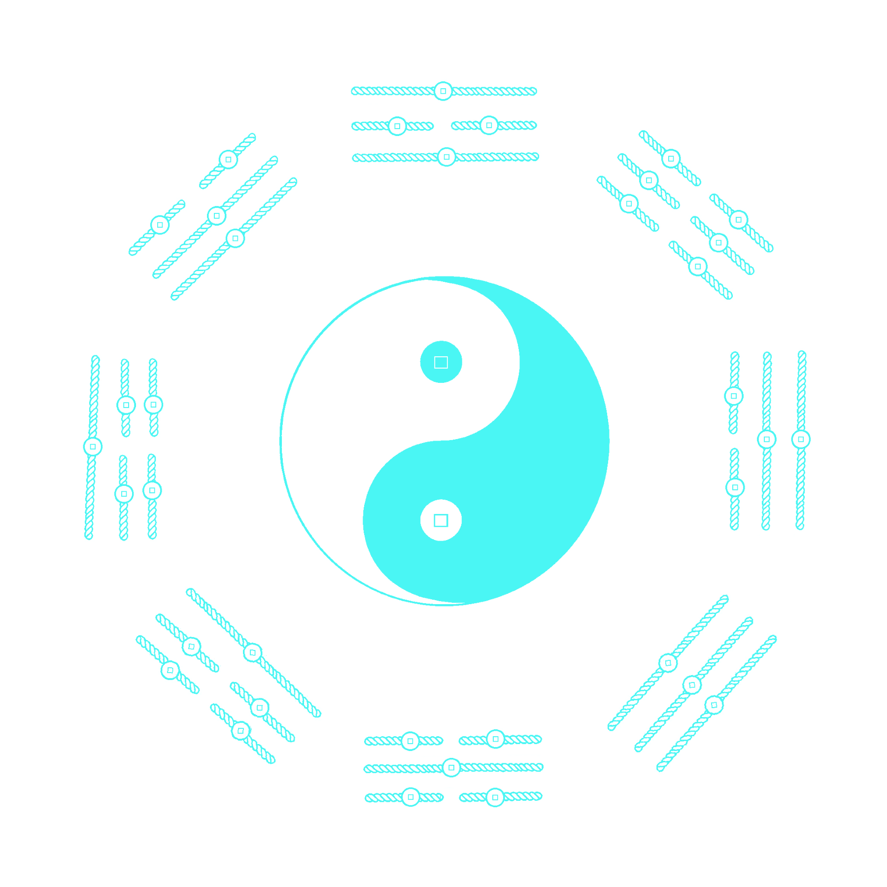

FortuneCord™ | 炼金术士的线稿世界
星币系統——将您的守护之星，织入命运之绳。
“财绳”视觉系统
绳串铜钱 = 聚财纳福
以“绳串币”为核心语言，转译：太极 · 八卦 · 河图 · 洛书 · 星宿 · 星官 · 星座 · 其他星象
公式：○ + □ + ─ = FORTUNE CORD （○=币形；□=币孔；─=连线）
币形：从传统方孔圆币，到花卉、水果、宝石与毛茸星币的万物演化。

图谱集萃

钱绳版北斗七币图

心链 · 二耳兽币 · 太极

桑葚水果星币 · 北斗七币图

牡丹花卉星币 · 北斗七币图

西瓜水果星币 · 北斗七币图

北斗七宠 · 北斗七币图

无耳毛茸 · 蜷缩兽背 · 直线尾

北斗二耳兽币

单耳毛茸 · 北斗七币 · 方形口袋

北斗七萨摩耶币 · 卷尾

北斗七博美犬币

小熊座 · 小北斗七宝石星币

康乃馨星币 · 猎户座

毛球星币 · 巨蟹星象连接线

元宝 · 双鱼星座连线图

区块链太极 · 毛茸圆币

后天绳币太极

先天链式太极

恒星闪耀 · 密齿边方孔圆币 · 直线光芒

恒星闪耀 · 先天八卦方孔圆币 · 直链光芒

恒星闪耀 · 花穿孔圆币 · 8字形绳光芒

星币脉冲 · 花穿孔圆币 · 水波纹光芒

钱绳 · 太极河图

摇钱术 · 异形币 · 摇钱树
我是一名炼金术士。我的工作，是看清炼金的本相，把圆、方、绳这些本相，一笔一笔画出来。
圆是天道循环，财富流转不息；方是规矩边界，赚多少留多少，心里有数；绳是连接——把散落的财富串起来，把断了的流转接起来。
白币为显，流动生长；黑币为藏，根基稳当。一显一藏，一进一守，方是完整的财富观。
静候同频者，以此绳共织万物：印刷品、纺织品、珠宝、星空顶、食品包装、NFT。
对“财绳”视觉系统感兴趣，希望将其应用于您自己的太极、星座或星象符号再创作？欢迎联系合作或授权。
📧 咨询：fortunecord [at] qq [dot] com （请将 [at] 替换为 @，[dot] 替换为 .）